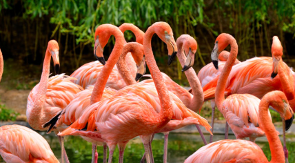
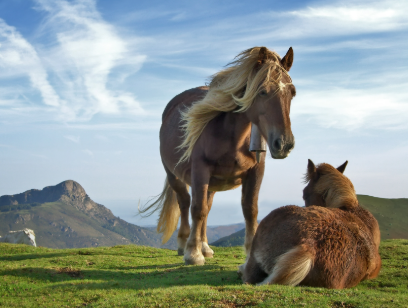
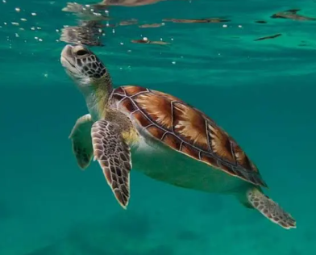
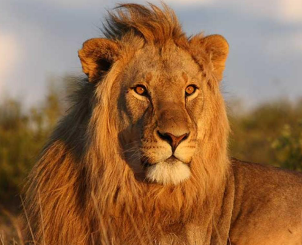
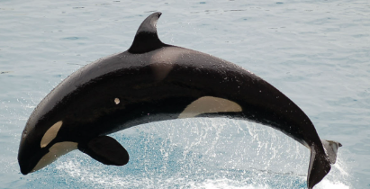

| ANIMALES | DESCRIPCIÓN | IMAGEN |
|---|---|---|
| FLAMINGO | Un flamenco es un tipo de ave acuática zancuda, inconfundible por sus patas largas, cuello largo, pico curvado y plumaje que varía del rosa al rojizo, obtenido de los pigmentos de su dieta de algas y crustáceos, y que vive en grandes bandadas en hábitats de agua salobre. |
 |
| CABALLO | Un caballo es un mamífero herbívoro cuadrúpedo de la familia Equidae, conocido por su fuerza, velocidad y nobleza, domesticado hace miles de años para transporte, agricultura, deporte y compañía. Se caracteriza por su cuerpo robusto, patas fuertes con pezuñas, crines largas y su dieta basada en pasto y forraje, con varias razas que varían en tamaño y propósito, desde ponis pequeños hasta grandes caballos de tiro. |
 |
| TORTUGA MARINA | Las tortugas (Testudines) o quelonios (Chelonia) son un orden de reptiles (Sauropsida) caracterizados por tener un tronco ancho y corto, y un caparazón que protege los órganos internos. |
 |
| LEÓN | El león (Panthera leo) es un mamífero carnívoro de la familia Felidae, considerado el felino más sociable del mundo debido a que vive en manadas de hembras emparentadas. |
 |
| ORCA | La orca es una especie de cetáceo odontoceto perteneciente a la familia Delphinidae, que habita en todos los océanos del planeta. Es la especie más grande de delfínido y la única existente actual reconocida dentro del género Orcinus. Este cetáceo posee una complexión robusta e hidrodinámica. |
 |